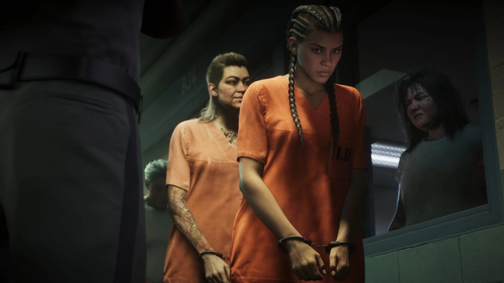

Mission 1 — The Opening: how Jason met Lucia

Spoiler warning: this guide describes GTA 6's opening sequence. Short answer: the game opens two years before the main story, with Jason and Lucia's first meeting — over a stolen car. The sequence below is described consistently by launch-day reviews and hands-on coverage (checked 19 November 2026). The mission's official in-game title is not announced yet; this page will be updated when it is confirmed.
Mission facts
- Position: the opening of the story (prologue sequence).
- Official mission name: Not announced yet.
- Playable character: Jason (Reported).
- Characters: Jason Duval and Lucia Caminos — their first meeting.
- Setting: a street in Leonida, two years before the main story.
- Leads into: the present-day story — Lucia in a correctional facility, about to re-enter Jason's life.
The sequence, step by step
- 1. The car. Jason pries open a car door, trying to steal it.
- 2. The owner appears. Lucia confronts him — the car belongs to her mother.
- 3. The twist. Lucia reveals she had already stolen the car herself. The "victim" is a thief too.
- 4. The law arrives. A police officer approaches while the two are arguing.
- 5. Partners. Instead of being arrested, Jason and Lucia team up on the spot, overpower the officer and escape together.
- 6. Two years later. The story cuts forward: Lucia is in a correctional facility — and the main story begins.
Tips
- This opening is story-led: follow the on-screen prompts and enjoy it — there is no difficult combat section reported.
- New controls note: sprint is now clicking L3 (in GTA 5 it was tapping X) — worth knowing from the first minute.
- Want zero spoilers instead? Skip to our launch day checklist.
Previous: none — this is the start. Next: Mission 2 — Gone Fishing: Jason's first job. Back to all mission guides.
Sources checked 19 November 2026: launch-day hands-on impressions (GameSpark's four-hour early-game report) and launch coverage describing the same opening (Sunday Guardian). Where sources only report rather than confirm, this page says so. See our editorial policy.